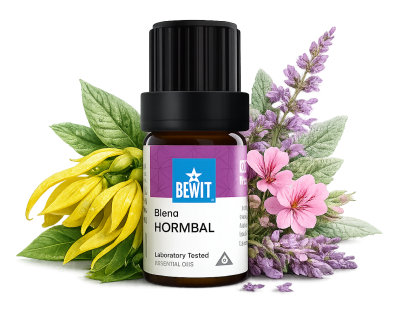

Hormonální rovnováha je základ ženské pohody. Esence mohou být jemnou, ale účinnou podporou na cestě k harmonii — bez tlaku a bez složitostí. Naslouchejte svému tělu a dejte mu, co potřebuje. Výsledky přicházejí s pravidelností — dopřejte si čas.

pro ženskou harmonii
Když hormony dělají problémy — výkyvy nálad, únava, PMS nebo menopauza. Ukáži vám, jak přirozeně podpořit hormonální rovnováhu a cítit se lépe v každé fázi života.

Směs pro harmonizaci hormonálního systému při PMS, nepravidelném cyklu nebo menopauze.
Pomáhá při výkyvech nálad, únavě a přecitlivělosti.
💧 Jak použít: zředěný v nosném oleji (např. bodlákový) naneste na spodní břicho nebo vnitřní stranu zápěstí. Lze přidat 3–5 kapek i do difuzéru.
Zjistit více →💧 Jak použít: zředěný v nosném oleji naneste na spodní břicho nebo vnitřní stranu stehen.
Chci podporu plodnosti💧 Jak použít: přidejte 3–5 kapek do difuzéru nebo zředěný v nosném oleji naneste na zápěstí a solar plexus.
Chci ženskou harmonii💧 Jak použít: zředěný v nosném oleji naneste na spodní břicho nebo vnitřní stranu zápěstí.
Chci rovnováhuHormonální rovnováha je základ ženské pohody. Esence mohou být jemnou, ale účinnou podporou na cestě k harmonii — bez tlaku a bez složitostí. Naslouchejte svému tělu a dejte mu, co potřebuje. Výsledky přicházejí s pravidelností — dopřejte si čas.
🌿 Všechny esence, které na tomto webu doporučuji, jsou od BEWIT. Jako registrovaný zákazník můžete nakupovat se slevou až 50 % na vybrané produkty.
Registrace u BEWIT zdarma →